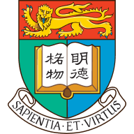

我是杨凯盛，甘肃人，本科在南京大学读金融工程，顺手辅修了计算机，中间去耶鲁交换了一个夏天， 现在在香港大学念金融硕士，2027 年毕业。
平时喜欢折腾各种工具：写 Python 脚本偷懒、搭 AI 工作流、在量化平台上跑策略， 也剪视频、看动画（强烈推荐 Rick and Morty 和双城之战，见博客）、玩开源。
做这个博客没有什么宏大的目标，就是记录一些生活碎片，顺便认识一些有意思的人。 如果你也对技术、投资、或者生活的各种奇思妙想感兴趣，欢迎发邮件找我聊天， 我一般都会回。
Hi，很高兴你点进这一页 ：）
我是杨凯盛，甘肃人，本科在南京大学读金融工程，顺手辅修了计算机，中间去耶鲁交换了一个夏天， 现在在香港大学念金融硕士，2027 年毕业。
平时喜欢折腾各种工具：写 Python 脚本偷懒、搭 AI 工作流、在量化平台上跑策略， 也剪视频、看动画（强烈推荐 Rick and Morty 和双城之战，见博客）、玩开源。
做这个博客没有什么宏大的目标，就是记录一些生活碎片，顺便认识一些有意思的人。 如果你也对技术、投资、或者生活的各种奇思妙想感兴趣，欢迎发邮件找我聊天， 我一般都会回。
